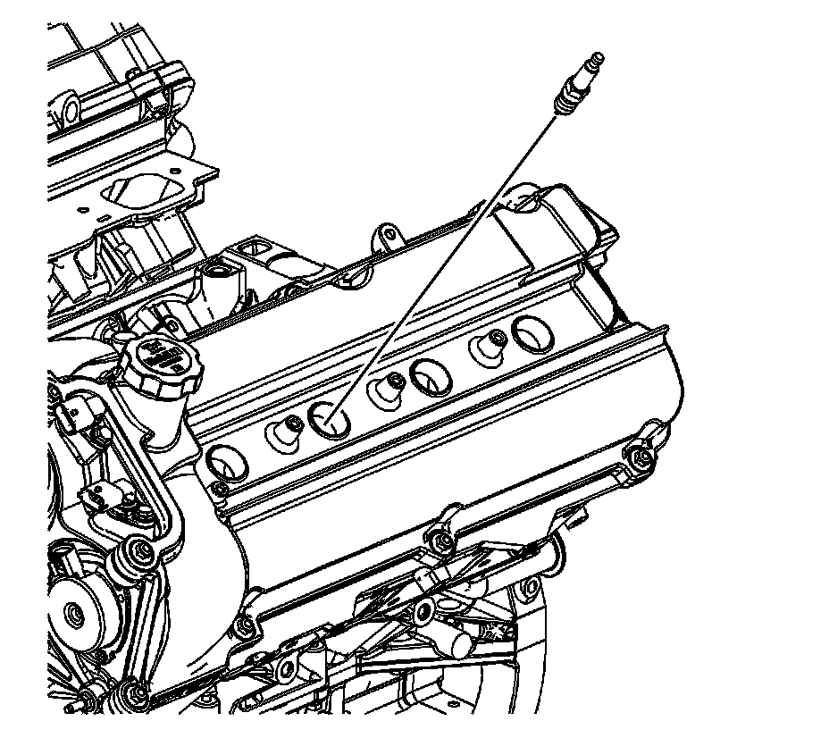
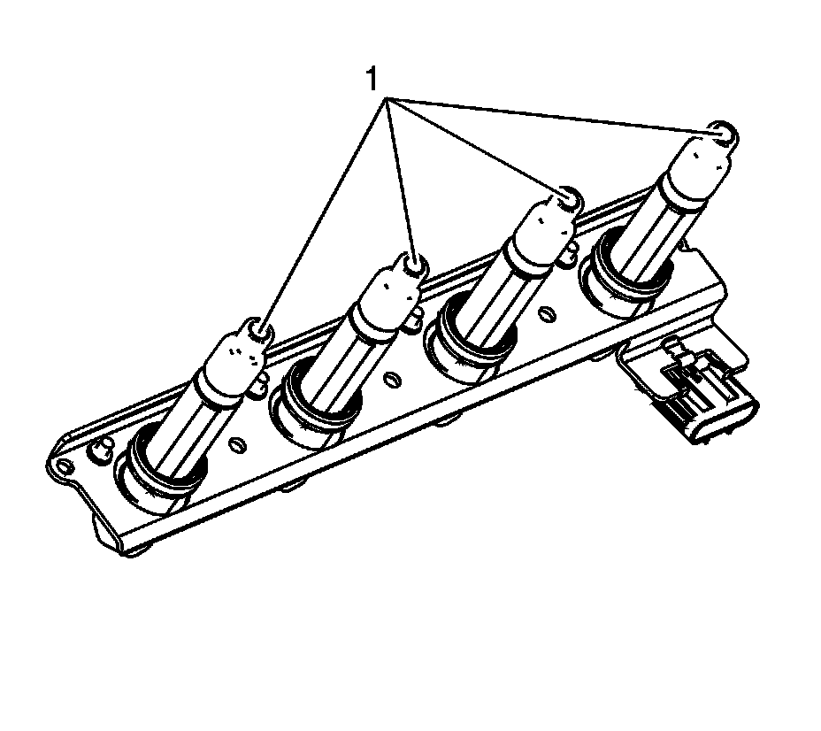
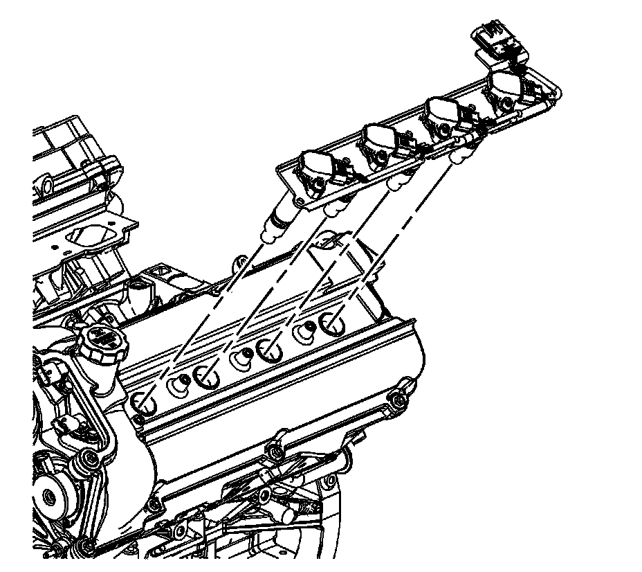
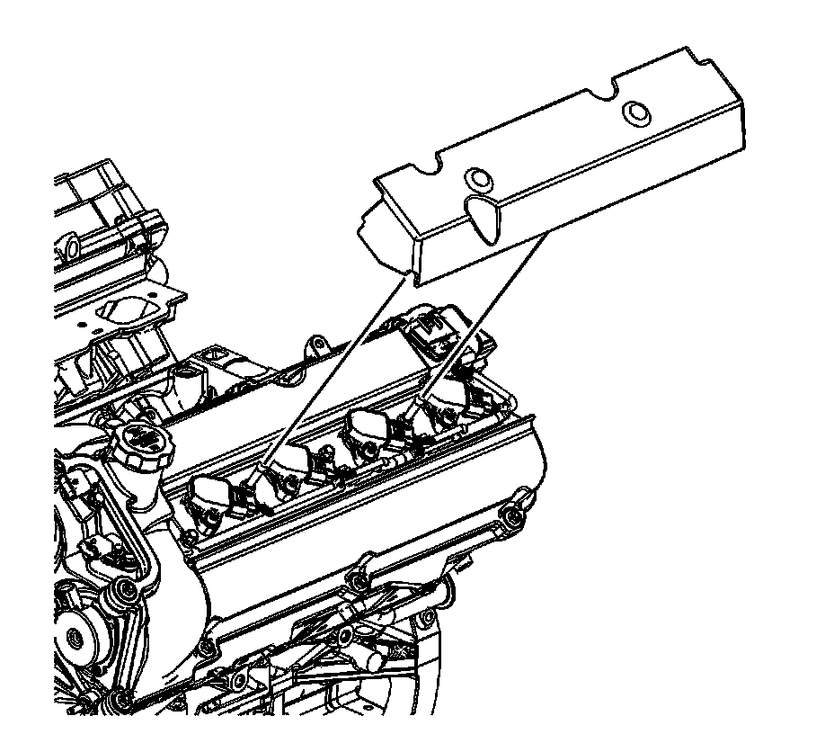

124. Ignition Coil Module Installation - Left Side
Ignition Coil Module Installation - Left Side

Notice: Refer to Fastener Notice (Fastener Notice) .
1. Install the left spark plugs.
Tighten the spark plugs to 15 N.m (11 lb ft).

2. Apply a small amount of dielectric grease GM P/N 12345579, (Canadian P/N 1974984), to each spark plug boot (1) of the ignition coil assembly.

3. Carefully, install the left ignition coil assembly.

4. Install the left ignition coil assembly bolts (708) and ball studs (709).
Tighten the left ignition coil assembly bolts (708) and ball studs (709) to 10 N.m (89 lb in).

5. Install the left ignition coil assembly cover.